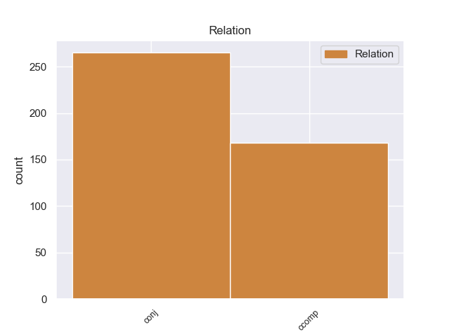
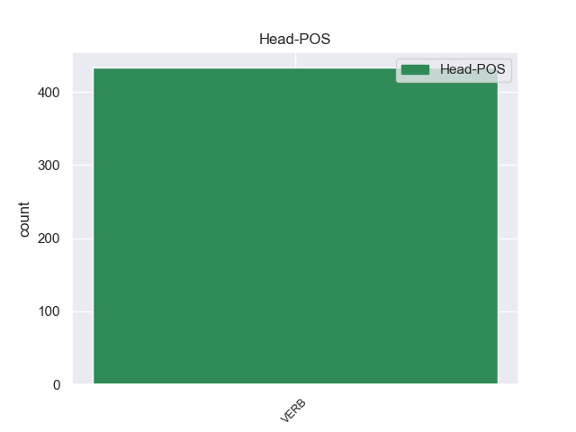
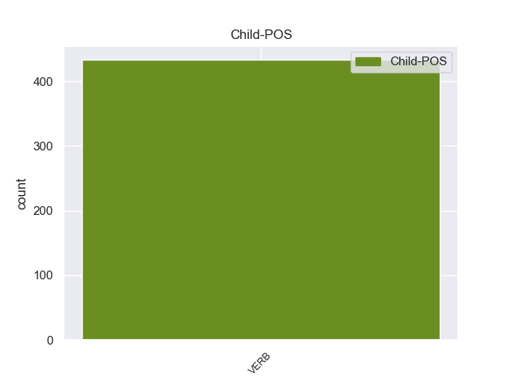

Distribution of features within this leaf



Agreement Rules sorted by frequency.
- When the dependent token is the conjunct(conj) of the head token,
1 Είναι _ _ _ _ 0 _ _ _
2 σημαντικό _ _ _ _ 0 _ _ _
3 να _ _ _ _ 0 _ _ _
4 υπογραμμίσω _ _ _ _ 0 _ _ _
5 το _ _ _ _ 0 _ _ _
6 γεγονός _ _ _ _ 0 _ _ _
7 ότι _ _ _ _ 0 _ _ _
8 και _ _ _ _ 0 _ _ _
9 οι _ _ _ _ 0 _ _ _
10 δύο _ _ _ _ 0 _ _ _
11 βουλευτές _ _ _ _ 0 _ _ _
12 διατρανώνουν διατρανώνω VERB VERB Aspect=Imp|Mood=Ind|Number=Plur|Person=3|Tense=Pres|VerbForm=Fin|Voice=Act 0 _ _ _
13 σθεναρά _ _ _ _ 0 _ _ _
14 την _ _ _ _ 0 _ _ _
15 αθωότητά _ _ _ _ 0 _ _ _
16 τους _ _ _ _ 0 _ _ _
17 και _ _ _ _ 0 _ _ _
18 καταγγέλλουν καταγγέλλω VERB VERB Aspect=Imp|Mood=Ind|Number=Plur|Person=3|Tense=Pres|VerbForm=Fin|Voice=Act 12 conj _ _
19 αυτό _ _ _ _ 0 _ _ _
20 που _ _ _ _ 0 _ _ _
21 οι _ _ _ _ 0 _ _ _
22 ίδιοι _ _ _ _ 0 _ _ _
23 θεωρούν _ _ _ _ 0 _ _ _
24 καταχρήσεις _ _ _ _ 0 _ _ _
25 σ _ _ _ _ 0 _ _ _
26 τη _ _ _ _ 0 _ _ _
27 διαδικασία _ _ _ _ 0 _ _ _
28 δίωξης _ _ _ _ 0 _ _ _
29 . _ _ _ _ 0 _ _ _
1 Έχουμε _ _ _ _ 0 _ _ _
2 την _ _ _ _ 0 _ _ _
3 απαρέγκλιτη _ _ _ _ 0 _ _ _
4 αρχή _ _ _ _ 0 _ _ _
5 να _ _ _ _ 0 _ _ _
6 μην _ _ _ _ 0 _ _ _
7 διαμορφώνουμε _ _ _ _ 0 _ _ _
8 οποιαδήποτε _ _ _ _ 0 _ _ _
9 γνώμη _ _ _ _ 0 _ _ _
10 σχετικά _ _ _ _ 0 _ _ _
11 με _ _ _ _ 0 _ _ _
12 την _ _ _ _ 0 _ _ _
13 ουσία _ _ _ _ 0 _ _ _
14 των _ _ _ _ 0 _ _ _
15 κατηγοριών _ _ _ _ 0 _ _ _
16 , _ _ _ _ 0 _ _ _
17 αλλά _ _ _ _ 0 _ _ _
18 να _ _ _ _ 0 _ _ _
19 θεωρούμε θεωρώ VERB VERB Aspect=Imp|Mood=Ind|Number=Plur|Person=1|Tense=Pres|VerbForm=Fin|Voice=Act 0 _ _ _
20 ότι _ _ _ _ 0 _ _ _
21 οι _ _ _ _ 0 _ _ _
22 βουλευτές _ _ _ _ 0 _ _ _
23 απολαύουν απολαύω VERB VERB Aspect=Imp|Mood=Ind|Number=Plur|Person=3|Tense=Pres|VerbForm=Fin|Voice=Act 19 ccomp _ _
24 του _ _ _ _ 0 _ _ _
25 τεκμηρίου _ _ _ _ 0 _ _ _
26 της _ _ _ _ 0 _ _ _
27 αθωότητας _ _ _ _ 0 _ _ _
28 . _ _ _ _ 0 _ _ _
Disagree Examples:
1 Σύμφωνα _ _ _ _ 0 _ _ _
2 με _ _ _ _ 0 _ _ _
3 έρευνες _ _ _ _ 0 _ _ _
4 , _ _ _ _ 0 _ _ _
5 το _ _ _ _ 0 _ _ _
6 53% _ _ _ _ 0 _ _ _
7 των _ _ _ _ 0 _ _ _
8 Γάλλων _ _ _ _ 0 _ _ _
9 πιστεύουν πιστεύω VERB VERB Aspect=Imp|Mood=Ind|Number=Plur|Person=3|Tense=Pres|VerbForm=Fin|Voice=Act 0 _ _ _
10 ότι _ _ _ _ 0 _ _ _
11 η _ _ _ _ 0 _ _ _
12 τρομοκρατική _ _ _ _ 0 _ _ _
13 απειλή _ _ _ _ 0 _ _ _
14 αυξήθηκε αυξάνω VERB VERB Aspect=Perf|Mood=Ind|Number=Sing|Person=3|Tense=Past|VerbForm=Fin|Voice=Pass 9 ccomp _ _
15 ενώ _ _ _ _ 0 _ _ _
16 το _ _ _ _ 0 _ _ _
17 υπόλοιπο _ _ _ _ 0 _ _ _
18 47% _ _ _ _ 0 _ _ _
19 θεωρεί _ _ _ _ 0 _ _ _
20 ότι _ _ _ _ 0 _ _ _
21 δεν _ _ _ _ 0 _ _ _
22 υπάρχει _ _ _ _ 0 _ _ _
23 καμία _ _ _ _ 0 _ _ _
24 τρομοκρατική _ _ _ _ 0 _ _ _
25 απειλή _ _ _ _ 0 _ _ _
26 . _ _ _ _ 0 _ _ _
1 Η _ _ _ _ 0 _ _ _
2 έρευνα _ _ _ _ 0 _ _ _
3 της _ _ _ _ 0 _ _ _
4 Ifop _ _ _ _ 0 _ _ _
5 έδειξε δείχνω VERB VERB Aspect=Perf|Mood=Ind|Number=Sing|Person=3|Tense=Past|VerbForm=Fin|Voice=Act 0 _ _ _
6 ότι _ _ _ _ 0 _ _ _
7 « _ _ _ _ 0 _ _ _
8 το _ _ _ _ 0 _ _ _
9 μεγαλύτερο _ _ _ _ 0 _ _ _
10 μέρος _ _ _ _ 0 _ _ _
11 των _ _ _ _ 0 _ _ _
12 ηλικιωμένων _ _ _ _ 0 _ _ _
13 θεωρεί θεωρώ VERB VERB Aspect=Imp|Mood=Ind|Number=Sing|Person=3|Tense=Pres|VerbForm=Fin|Voice=Act 5 ccomp _ _
14 αυξημένη _ _ _ _ 0 _ _ _
15 την _ _ _ _ 0 _ _ _
16 τρομοκρατική _ _ _ _ 0 _ _ _
17 απειλή _ _ _ _ 0 _ _ _
18 , _ _ _ _ 0 _ _ _
19 ενώ _ _ _ _ 0 _ _ _
20 μονάχα _ _ _ _ 0 _ _ _
21 το _ _ _ _ 0 _ _ _
22 5% _ _ _ _ 0 _ _ _
23 των _ _ _ _ 0 _ _ _
24 ατόμων _ _ _ _ 0 _ _ _
25 ηλικίας _ _ _ _ 0 _ _ _
26 18-24 _ _ _ _ 0 _ _ _
27 ετών _ _ _ _ 0 _ _ _
28 συμφωνεί _ _ _ _ 0 _ _ _
29 μ' _ _ _ _ 0 _ _ _
30 αυτή _ _ _ _ 0 _ _ _
31 την _ _ _ _ 0 _ _ _
32 άποψη _ _ _ _ 0 _ _ _
33 . _ _ _ _ 0 _ _ _
1 Ο _ _ _ _ 0 _ _ _
2 Υπουργός _ _ _ _ 0 _ _ _
3 Εξωτερικών _ _ _ _ 0 _ _ _
4 της _ _ _ _ 0 _ _ _
5 Ρωσίας _ _ _ _ 0 _ _ _
6 ανέφερε αναφέρω VERB VERB Aspect=Perf|Mood=Ind|Number=Sing|Person=3|Tense=Past|VerbForm=Fin|Voice=Act 0 _ _ _
7 επίσης _ _ _ _ 0 _ _ _
8 ότι _ _ _ _ 0 _ _ _
9 « _ _ _ _ 0 _ _ _
10 η _ _ _ _ 0 _ _ _
11 επιτυχία _ _ _ _ 0 _ _ _
12 της _ _ _ _ 0 _ _ _
13 αποστολής _ _ _ _ 0 _ _ _
14 του _ _ _ _ 0 _ _ _
15 ΝΑΤΟ _ _ _ _ 0 _ _ _
16 σ _ _ _ _ 0 _ _ _
17 το _ _ _ _ 0 _ _ _
18 Αφγανιστάν _ _ _ _ 0 _ _ _
19 αποτελεί αποτελώ VERB VERB Aspect=Imp|Mood=Ind|Number=Sing|Person=3|Tense=Pres|VerbForm=Fin|Voice=Act 6 ccomp _ _
20 προτεραιότητα _ _ _ _ 0 _ _ _
21 για _ _ _ _ 0 _ _ _
22 την _ _ _ _ 0 _ _ _
23 Ρωσία _ _ _ _ 0 _ _ _
24 , _ _ _ _ 0 _ _ _
25 καθώς _ _ _ _ 0 _ _ _
26 η _ _ _ _ 0 _ _ _
27 απειλή _ _ _ _ 0 _ _ _
28 της _ _ _ _ 0 _ _ _
29 τρομοκρατίας _ _ _ _ 0 _ _ _
30 και _ _ _ _ 0 _ _ _
31 του _ _ _ _ 0 _ _ _
32 εμπορίου _ _ _ _ 0 _ _ _
33 ναρκωτικών _ _ _ _ 0 _ _ _
34 θα _ _ _ _ 0 _ _ _
35 περιοριστεί _ _ _ _ 0 _ _ _
36 εάν _ _ _ _ 0 _ _ _
37 υπάρξει _ _ _ _ 0 _ _ _
38 σταθερότητα _ _ _ _ 0 _ _ _
39 σ _ _ _ _ 0 _ _ _
40 το _ _ _ _ 0 _ _ _
41 Αφγανιστάν _ _ _ _ 0 _ _ _
42 » _ _ _ _ 0 _ _ _
43 . _ _ _ _ 0 _ _ _
1 Η _ _ _ _ 0 _ _ _
2 Αλυκή _ _ _ _ 0 _ _ _
3 που _ _ _ _ 0 _ _ _
4 πήρε _ _ _ _ 0 _ _ _
5 το _ _ _ _ 0 _ _ _
6 όνομά _ _ _ _ 0 _ _ _
7 της _ _ _ _ 0 _ _ _
8 από _ _ _ _ 0 _ _ _
9 την _ _ _ _ 0 _ _ _
10 παραφθορά _ _ _ _ 0 _ _ _
11 του _ _ _ _ 0 _ _ _
12 ονόματος _ _ _ _ 0 _ _ _
13 της _ _ _ _ 0 _ _ _
14 Αλίκης _ _ _ _ 0 _ _ _
15 , _ _ _ _ 0 _ _ _
16 βασίλισσας _ _ _ _ 0 _ _ _
17 της _ _ _ _ 0 _ _ _
18 χερσονήσου _ _ _ _ 0 _ _ _
19 αυτής _ _ _ _ 0 _ _ _
20 κατά _ _ _ _ 0 _ _ _
21 την _ _ _ _ 0 _ _ _
22 παράδοση _ _ _ _ 0 _ _ _
23 , _ _ _ _ 0 _ _ _
24 βρίσκεται βρίσκω VERB VERB Aspect=Imp|Mood=Ind|Number=Sing|Person=3|Tense=Pres|VerbForm=Fin|Voice=Pass 0 _ _ _
25 σ _ _ _ _ 0 _ _ _
26 το _ _ _ _ 0 _ _ _
27 νότιοδυτικό _ _ _ _ 0 _ _ _
28 τμήμα _ _ _ _ 0 _ _ _
29 της _ _ _ _ 0 _ _ _
30 Θάσου _ _ _ _ 0 _ _ _
31 και _ _ _ _ 0 _ _ _
32 ήκμασε ακμάζω VERB VERB Aspect=Perf|Mood=Ind|Number=Sing|Person=3|Tense=Past|VerbForm=Fin|Voice=Act 24 conj _ _
33 κατά _ _ _ _ 0 _ _ _
34 την _ _ _ _ 0 _ _ _
35 αρχαιότητα _ _ _ _ 0 _ _ _
36 κυρίως _ _ _ _ 0 _ _ _
37 λόγω _ _ _ _ 0 _ _ _
38 της _ _ _ _ 0 _ _ _
39 εξόρυξης _ _ _ _ 0 _ _ _
40 μαρμάρων _ _ _ _ 0 _ _ _
41 . _ _ _ _ 0 _ _ _
1 Σας _ _ _ _ 0 _ _ _
2 έλεγα λέγω VERB VERB Aspect=Imp|Mood=Ind|Number=Sing|Person=1|Tense=Past|VerbForm=Fin|Voice=Act 0 _ _ _
3 , _ _ _ _ 0 _ _ _
4 κύριε _ _ _ _ 0 _ _ _
5 Πρόεδρε _ _ _ _ 0 _ _ _
6 του _ _ _ _ 0 _ _ _
7 Συμβουλίου _ _ _ _ 0 _ _ _
8 , _ _ _ _ 0 _ _ _
9 ότι _ _ _ _ 0 _ _ _
10 η _ _ _ _ 0 _ _ _
11 Ομάδα _ _ _ _ 0 _ _ _
12 μου _ _ _ _ 0 _ _ _
13 χαίρεται χαίρω VERB VERB Aspect=Imp|Mood=Ind|Number=Sing|Person=3|Tense=Pres|VerbForm=Fin|Voice=Pass 2 ccomp _ _
14 για _ _ _ _ 0 _ _ _
15 την _ _ _ _ 0 _ _ _
16 έγκριση _ _ _ _ 0 _ _ _
17 αυτών _ _ _ _ 0 _ _ _
18 των _ _ _ _ 0 _ _ _
19 δύο _ _ _ _ 0 _ _ _
20 μέσων _ _ _ _ 0 _ _ _
21 . _ _ _ _ 0 _ _ _